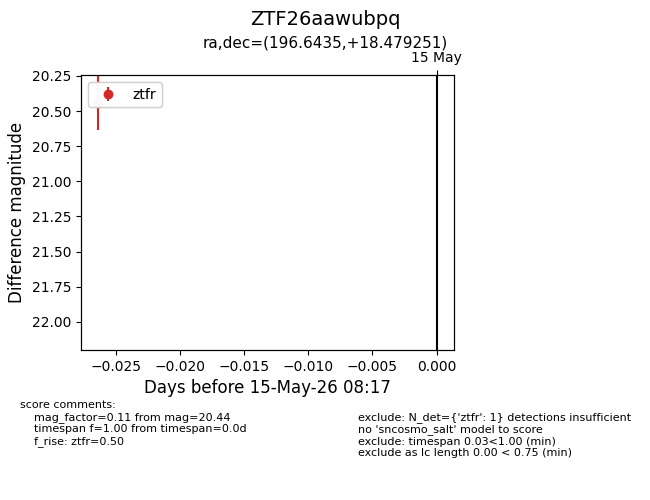
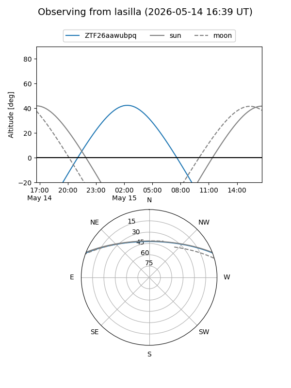
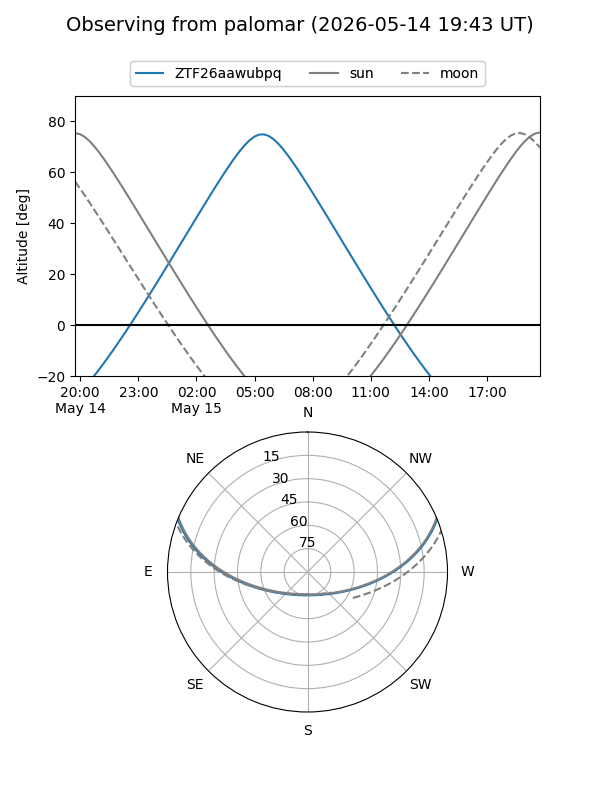

ZTF26aawubpq
Target ZTF26aawubpq at 2026-05-15 08:19
Aliases and brokers:
FINK: link
Lasair: link
ALeRCE: link
alt names
ZTF26aawubpq (ztf,fink_ztf)
Coordinates:
equatorial (ra, dec) = 196.6435,+18.47925
equatorial (HMS+DMS) = 13:06:34.45,+18:28:45.30
galactic (l, b) = (325.6588,+80.67598)
Flags:
Photometry:
last ztfr=20.44
1 ztfr detections
Lightcurve

Visibility


Additional plots